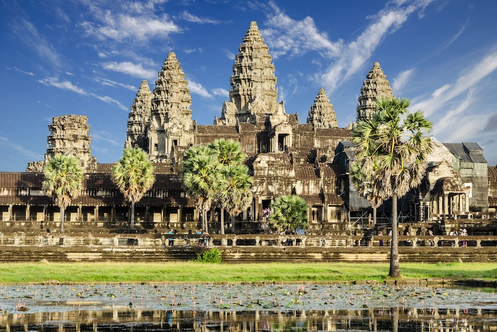
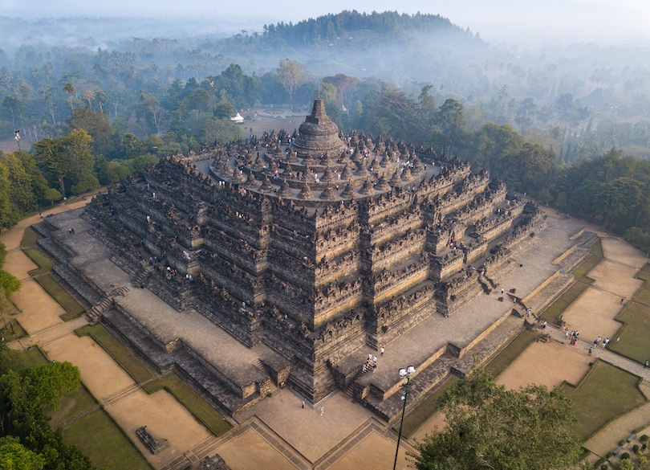
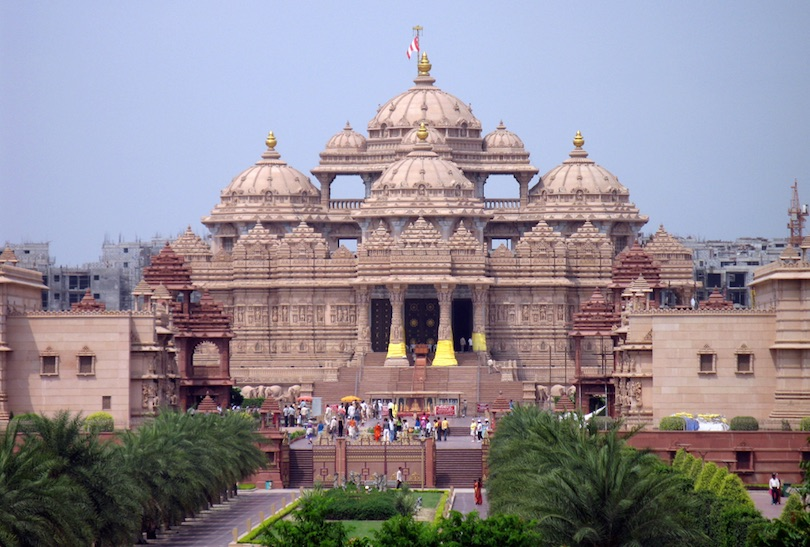
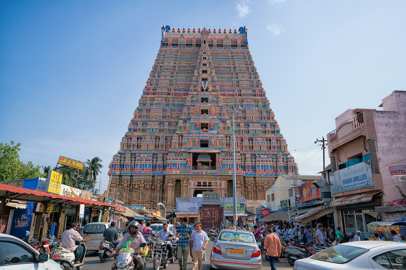
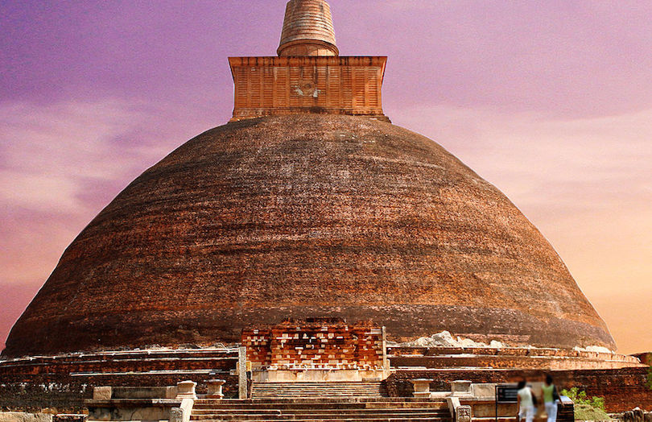
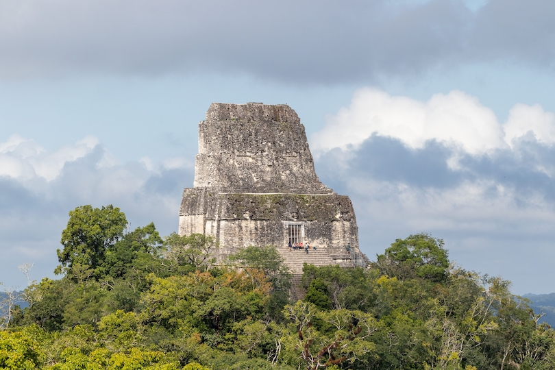
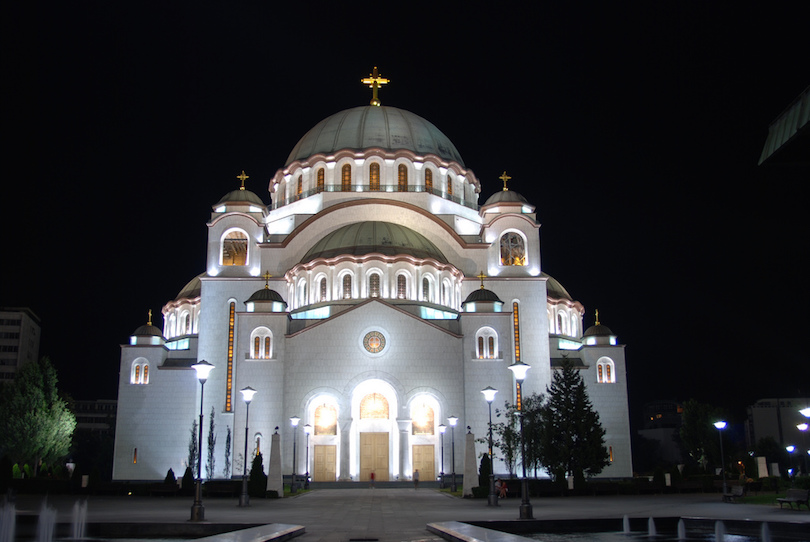
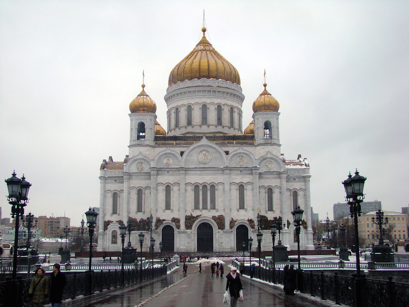
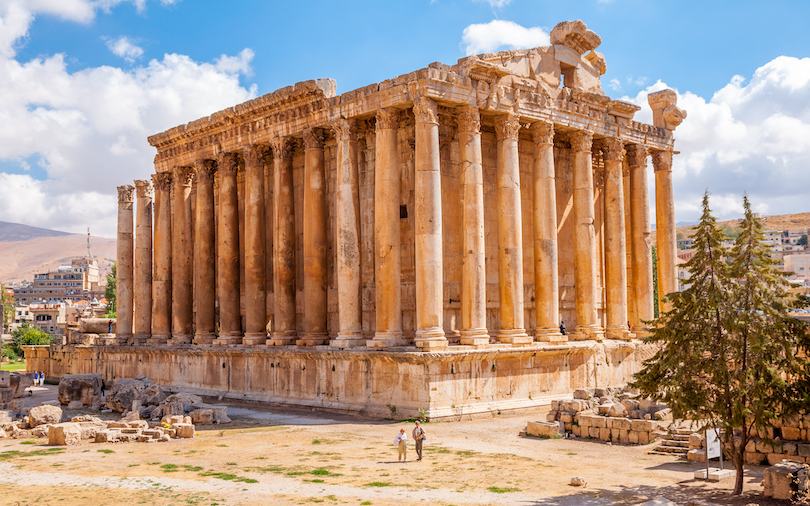

Angkor Wat temple, Cambodia

Borobudur temple, Java island

Akshardham temple, India

Sri Ranganathaswamy temple, India

Jetavanaramaya temple, Sri Lanka

Tikal temple IV, Guatemala

Temple of Saint Sava, Serbia

Temple of Christ the Saviour, Russia

Baalbek temple, Lebanon